Thái — Đại Hoàng Cung
Tổng mặt bằng
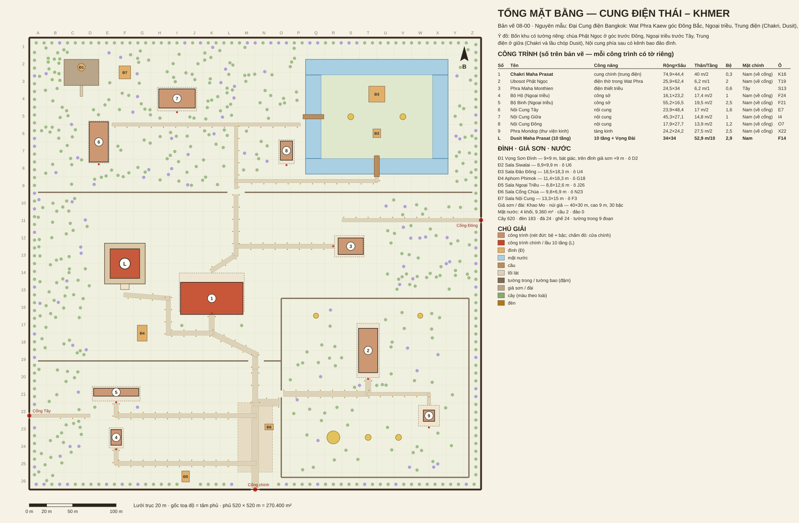
Đâu Suất Lâu (lầu 10 tầng)
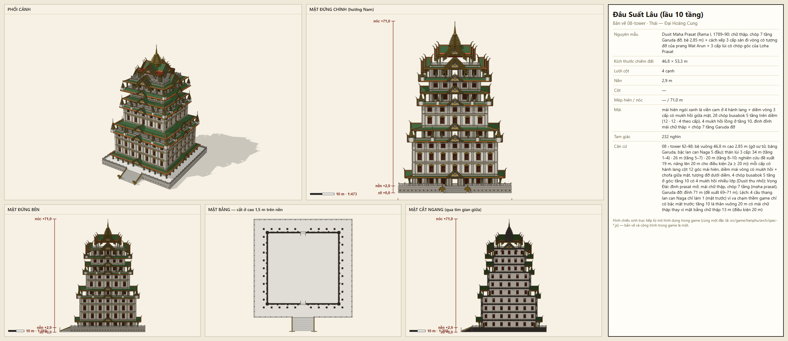
Chakri Maha Prasat
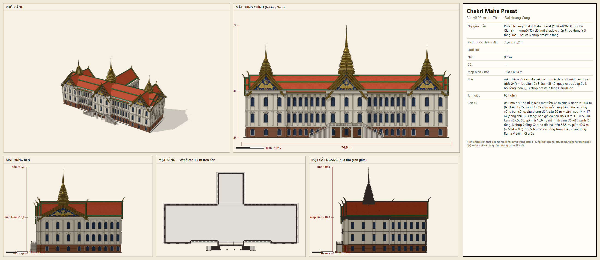
Bộ Binh — Phra Thinang Sutthaisawan Prasat
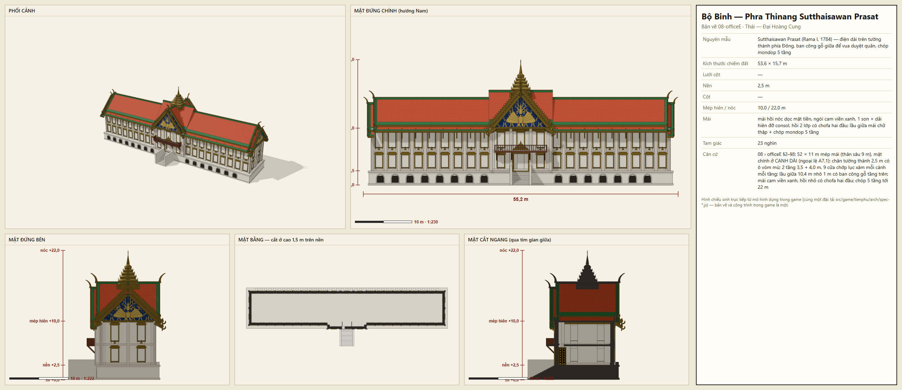
Ubosot Phật Ngọc
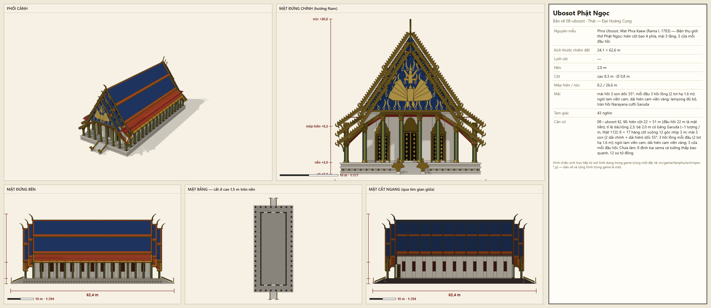
Phra Maha Monthien (điện Amarin Winitchai)
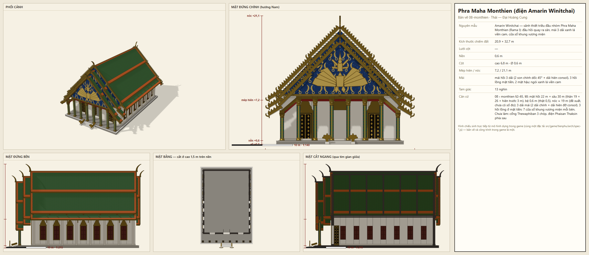
Bộ Hộ — Phra Thinang Ratchakaranya Sapha
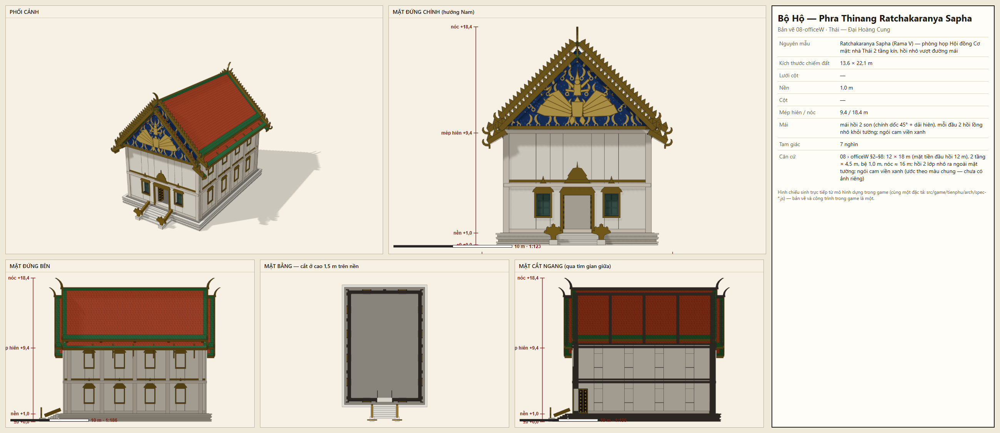
Nội Cung Tây — Phra Thinang Phiman Rattaya
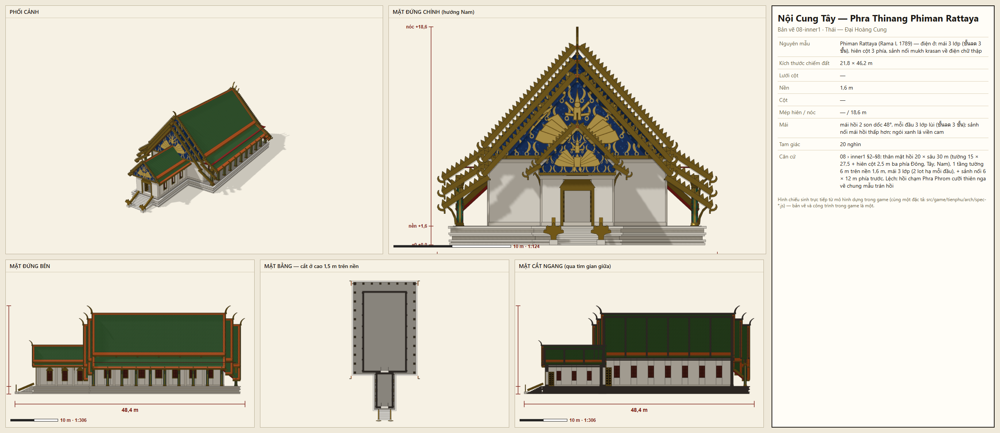
Nội Cung Giữa — Phra Thinang Chakraphat Phiman
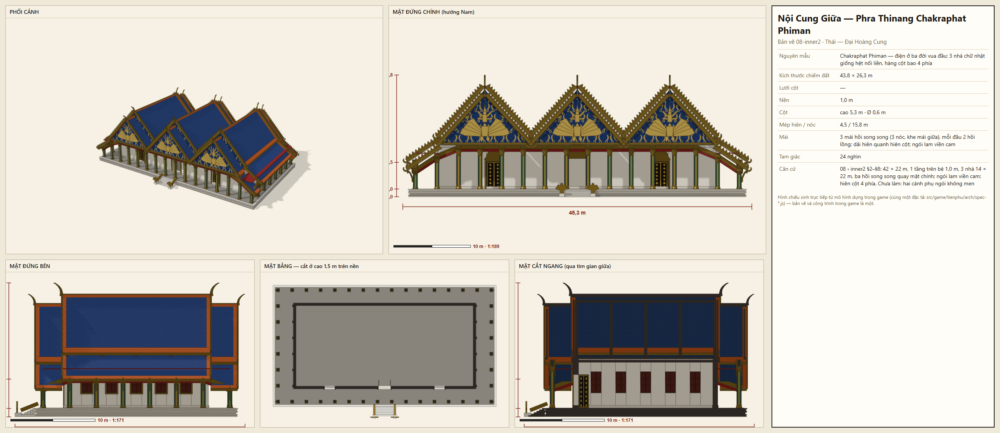
Nội Cung Đông — Phra Buddha Rattanasathan
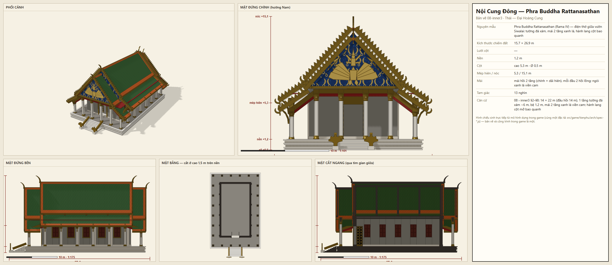
Phra Mondop (thư viện kinh)
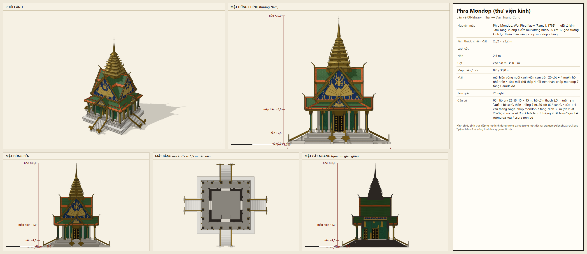
Vọng Sơn Đình
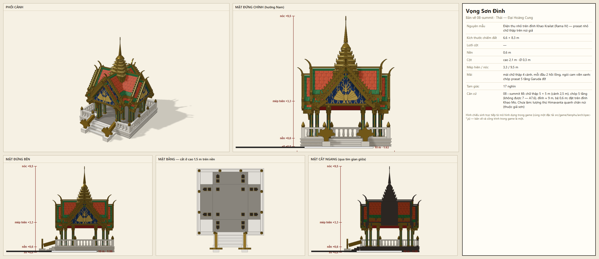
Sala Siwalai — Phra Thinang Sitalaphirom
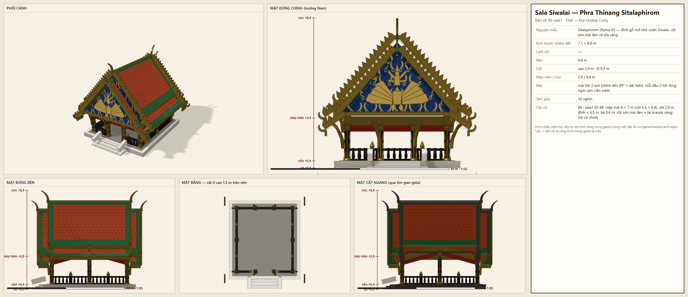
Sala Ngoại Triều — Phra Thinang Dusidaphirom
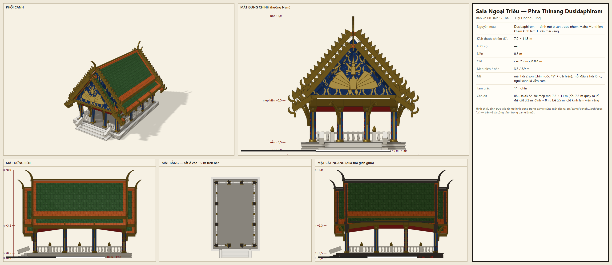
Sala Cổng Chùa (sala rai)
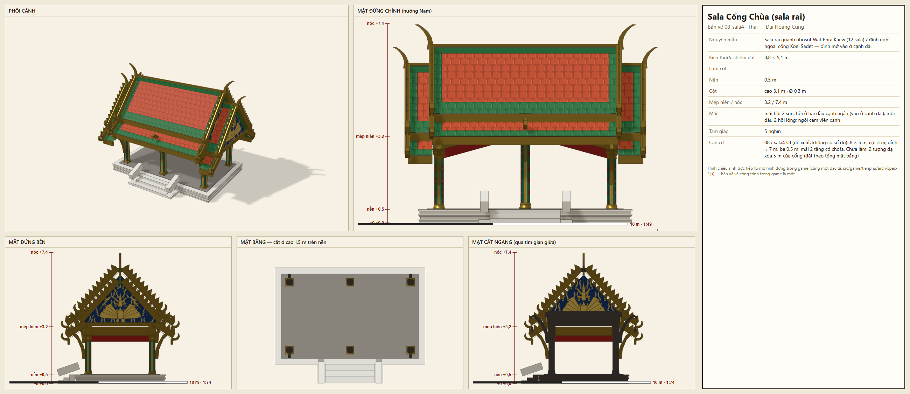
Sala Nội Cung — Phra Thinang Racharuedee
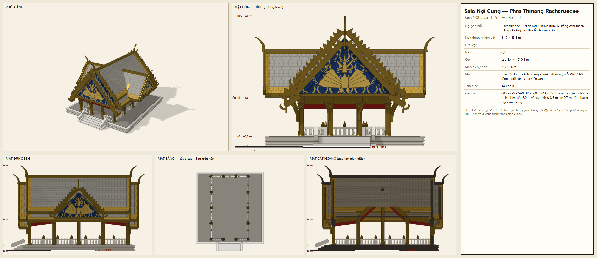
Aphorn Phimok Prasat
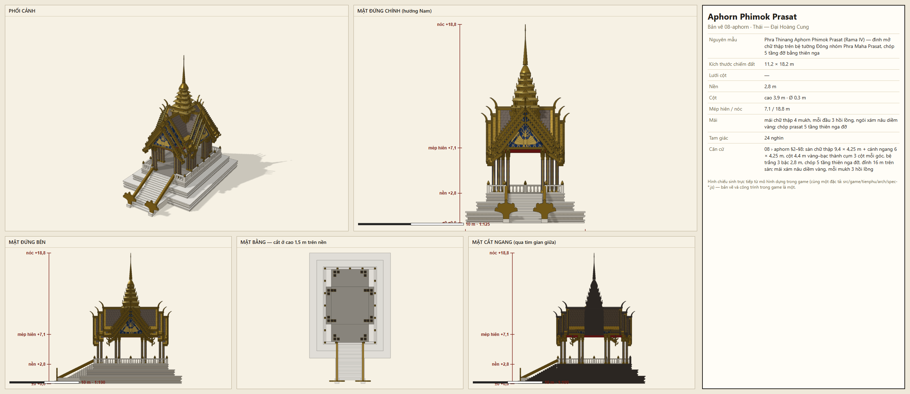
Sala Đảo Đông — Aisawan Thipphaya-at
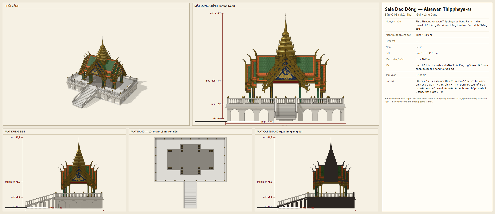